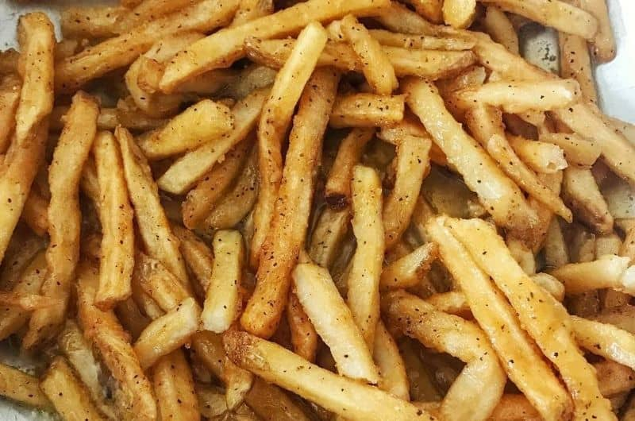

Pizza

Description
Make Popeyes French Fries in your very own kitchen! This copycat recipe is crispy, perfectly seasoned, and downright addicting.
Ingredients
- 3 large russet potatoes
- 4 Tablespoons canola or olive oil, divided
- 1 teaspoon chili powder
- 1 teaspoon salt
- 1 teaspoon black pepper
- 1 teaspoon garlic powder
- 1 teaspoon sugar
- 1 teaspoon oregano
- 1/2 teaspoon cayenne
- 1/2 teaspoon paprika
- dash of turmeric
Steps
- Preheat oven to 475 degrees F.
- Prepare your Cajun seasoning by combining all the spices in a bowl and set aside.
- Wash your potatoes and slice into strips. Place your washed potatoes in a bowl of hot water and let sit for 20 minutes. Drain potatoes and allow them to dry thoroughly on a paper towel.
- Grease your baking pan with 3 tbsp of oil and sprinkle the pan with 1/3 of the Cajun seasoning.
- In a separate bowl, toss the potatoes with 1 tbsp of oil and sprinkle lightly with seasoning.
- Place the potatoes in a single layer on your greased baking pan, cover with foil, and bake for 5 minutes.
- Remove the foil and bake for another 15 to 20 minutes or until potatoes are golden brown on the bottom. Flip each potato strip and bake for another 10 to 15 minutes, or until the fries are crisp and golden.
- Remove from the oven and sprinkle with the remaining Cajun seasoning.